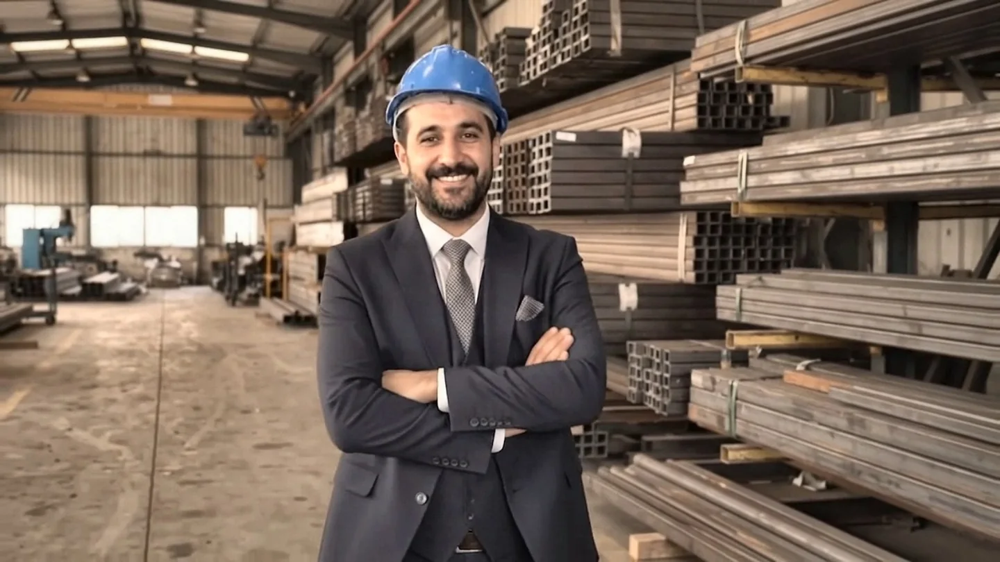
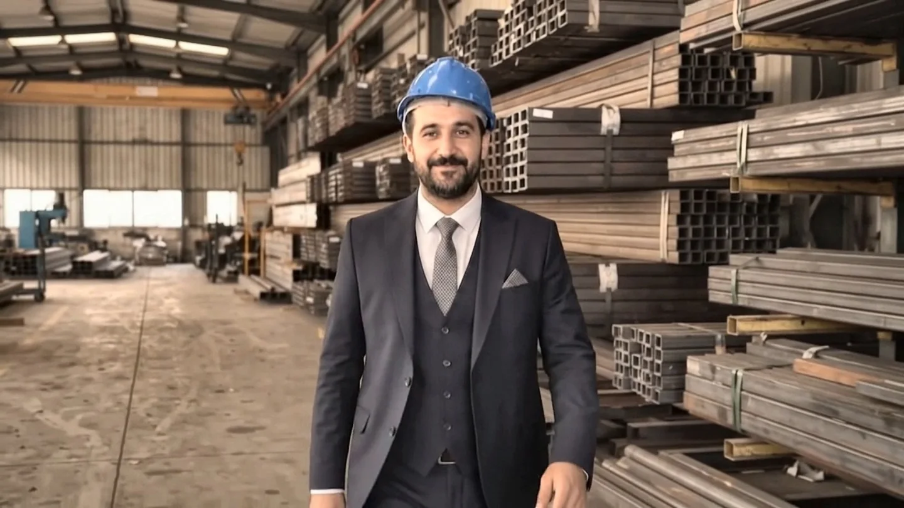
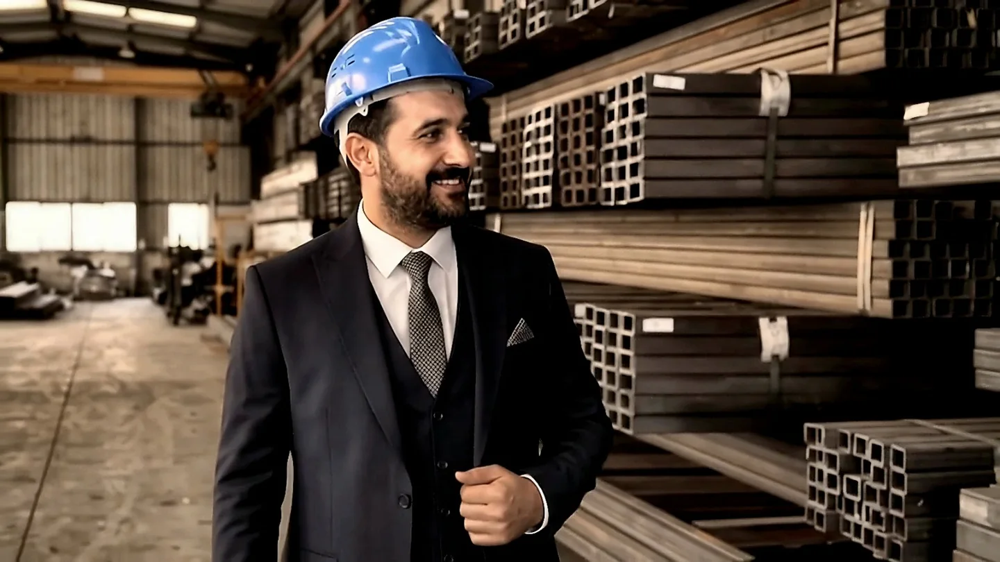

بناء على الثقة
:: الجمع بين تكديس المعارف المحلية والوصلات التجارية الدولية، وهيكل الشركات الموجه نحو تحقيق النتائج والشفافية.

مجموعة الأرض العالمية
المجموعة العالمية للإنشاءاتتم تأسيسه في فان في 7 مايو 2026 وتعمل شركتنا في مجالات التجارة الخارجية، والإمداد بالمنتجات، واللوجستيات، والغذاء، والبناء، والمنتجات الصناعية.
Author: Emrullah Earth · Capital: 2.000 TL · Central: Van, Turkey



Emrullah Toprak
أسس إمرالله توبراك شركة توبراك جروب جلوبال في وان، ويقود أهدافها في التجارة الدولية وتوريد المنتجات وبناء الشراكات التجارية.
يعتمد نهج الشركة على التواصل الموثوق والعمليات الشفافة والعلاقات التجارية طويلة الأمد.
تواصل معنا لبحث فرص التعاون ←إنتاج قيمة طويلة الأجل
ونحن نعمل على أساس الثقة والوضوح والاتصال في الوقت المناسب والتعاون المستدام في كل علاقة تجارية.
رؤيتنا
أن تكون جسرا تجاريا موثوقا به ومعترف به بين تركيا والأسواق العالمية.
مهمتنا
الجمع بين المنتج الصحيح في عمليات شفافة مع المورد المناسب والمشتري المناسب.
قيمنا
Reliability, compliance with legislation, quality, accessible communication and mutual benefit.
نهج الجودة
:: تحديد مواصفات المنتجات بوضوح وتوقعات الإنجاز في بداية العملية.
الثقافة
العودة السريعة، والاتصالات المسجلة، والعمل الجماعي الموجه نحو الحل.
الاستدامة
إقامة علاقات تجارية دائمة وقابلة للقياس.